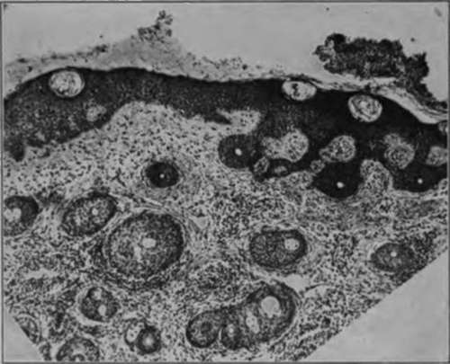
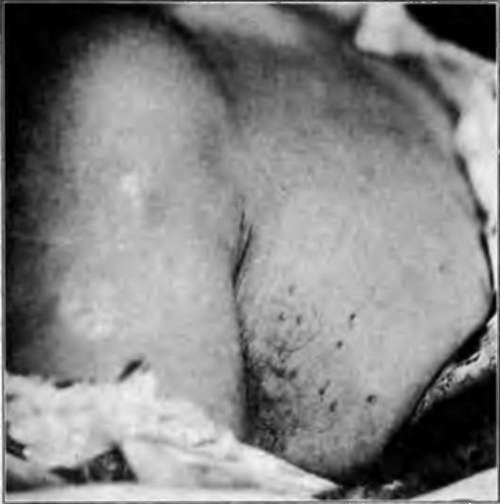
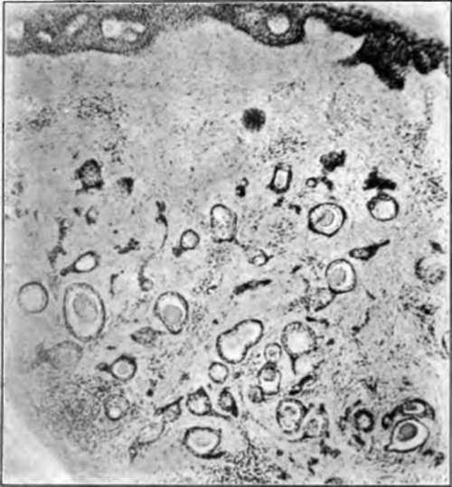
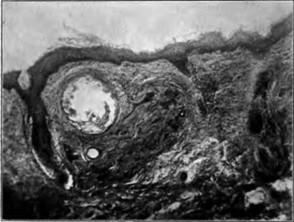

Syringocystadenoma
Description
This section is from the book "Skin Cancer", by Henry H. Hazen, A.B., M.D.. Also available from Amazon: Skin Cancer.
Syringocystadenoma
This group has likewise been well studied by Sutton, and his finding confirmed by Welch. For this group of tumors there have been many names proposed, largely because of the uncertainty as to the true pathological picture. It has been repeatedly confused with th group just described. Biesiadecki* and Kaposi* called these growt" " Lymphangioma tuberosum multiplex;" Quinquad,* " Cellulome epi-thelialc eruptif;" Besnicr,* "Nevi epithelcaux cystiques;" Wald-heim,* "Hemangioendothelioma cutis papillosum;" and Gassmann,"
Fig. 41.-Low-power photomicrograph of multiple benign cystic epithelioma. (Sutton's collection).
*Biesiadecki: Untersuchungen aus dem path. u. anat. Inst, im Krakau. 1872. 2. "Kaposi: Hebra's Lehrbuch dor Hautkrankheiten, Enke. "Quln^juad: Trans. Internat. Congr. Dermat., Paris. 1889. 412. " Besnier: Besnier and Doyen's Translation of Kaposi Pathol, u. Theraple d Hautkrankheiten. 11. 367.
*Waldheim: Arch. f. Dermat. u. Syphil., 1902, 226. "Gassmann: Arch. f. Dermat. u. Syphil.. 1901. Will. 177.
*Nevi cyst-epitheliomatosi papillosum." In addition to these names, many others have been given from time to time.
Clinical Course
Clinically, these tumors appear as numerous translucent semiglobular growths (Fig. 42), varying in diameter from 2 to 8 mm., and usually situated on either the chest or face. Women appear to be more subject to them than do men. They persist indefinitely, neither growing in size, nor tending to disappear. They do not undergo malignant change.
Fig. 42.-Syringocystadenoma. (Sutton's collection).
Pathology
Pathologically, the stratum corneum is unchanged (Figs. 43, 44), the granular layer is somewhat thinner than normal and is devoid of granules, and the basal layer is regularly arranged, but the cells are swollen and edematous, and the nuclei large and vesicular. The papilla? are flattened, or perhaps lacking. There is some cellular infiltration in the upper portion of the corium, but the blood vessels are lessened in number and show no inflammatory changes, the capillary endothelium being normal. The elastic tissue is reduced in amount, and an elastic membrane completely surrounds the cysts. Hair follicles and sebaceous glands appear to be normal. The coil glands are well developed and exhibit no pathological changes. There is some collagenous degeneration of the connective tissue stroma. Scattered throughout the cutis, from the sub-papillary portion of the corium to the subcutaneous fat, are numbers of round or oval masses of epithelium and epithelial lined tubules. Many of these cell collections possess a stem-like appendage of epithelial cells, two cells in thickness, which connect two or more of the gland-like masses. In many instances these epithelial tracts are found existing through the corium. The nuclei of the cells is large and stains deeply. In macroscopically normal skin taken from the trunk Sutton has found similar strands of epithelial cells, and in one specimen several budding processes and a few cysts were present. That these cells still retain their function was proven by Sutton by administering pilocarpine to the patient, sweat appearing upon the surface of the tumors.
Fig. 43.-Low-power photomicrograph of syringocystadenoma. (Sutton's collection).
Origin
There is still a question as to whether these tumors spring from previously normal sweat ducts, or from congenital or acquired defects. Torok* holds that the absence or rare occurrence of sweat glands in the area of the tumor, compared to the number in the adjoining normal skin, is indicative of the transformation of the preexisting sweat tubules into tumor elements. In favor of the congenital theory is the occurrence in so many instances of the tumor in early life, and especially in several members of the same family. Schidachi* has produced similar cysts, even with epithelial strands, by occluding the sweat ducts. Stockmann* has shown that the sweat tubules contain genuine secretion, and in one of Sutton's cases there was an enlargement of the tumor following the use of pilocarpine. Sutton strongly contends that the growths are derived from congenitally misplaced sweat ducts.
Fig. 44.-Low-power photomicrograph of syringocystadenoma. (Strobel's case).
Continue to:
Tags
bookdome.com, books, online, free, old, antique, new, read, browse, download